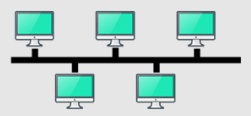

Topología BusEn una red de anillo, los nodos y enlaces se organizan en un anillo. Cada nodo tiene exactamente dos vecinos. En una red de este tipo, los repetidores se emplean para garantizar que los datos puedan llegar a los nodos que están más alejados entre sí en el anillo. Los datos generalmente fluyen unidireccionalmente en una red de anillo. La información trabaja en ambos sentidos y buscaba una "T" aunque no fuera para esa computadora. Requiere un cable coaxial (Grueso o delgado, din o dan), terminadores, conectores VNS y "T" VNS. Existe un protocolo de transimisión anticolisiones que se llama CMSA.
|

|